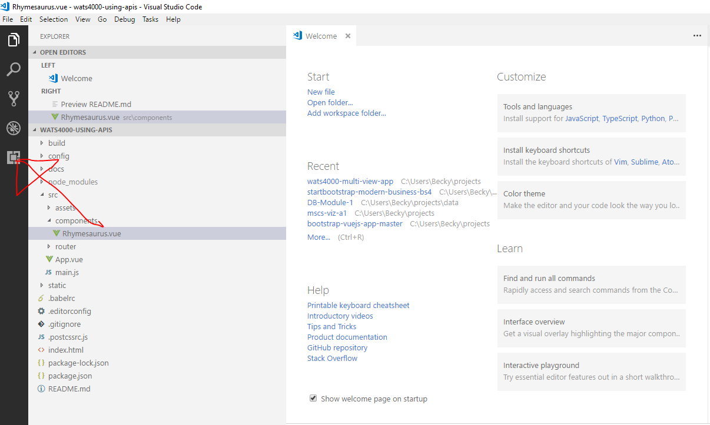
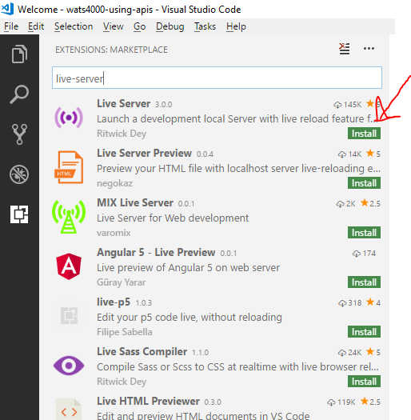
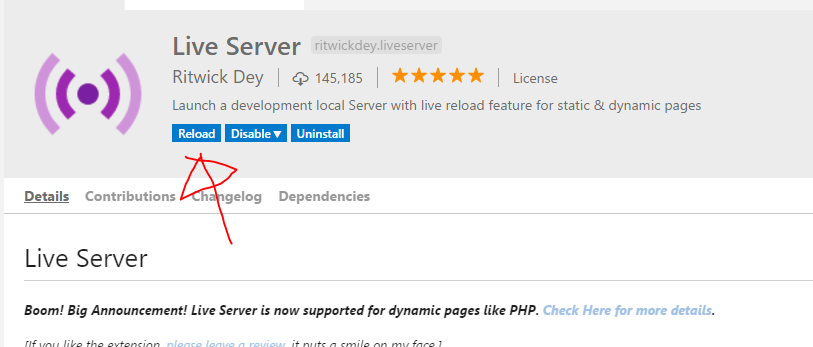
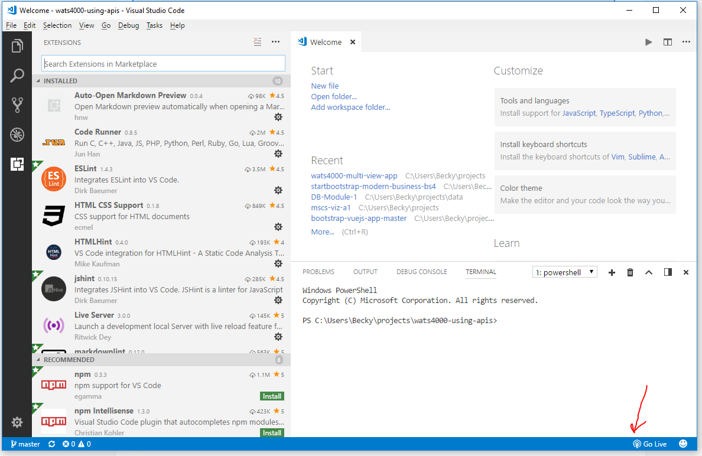
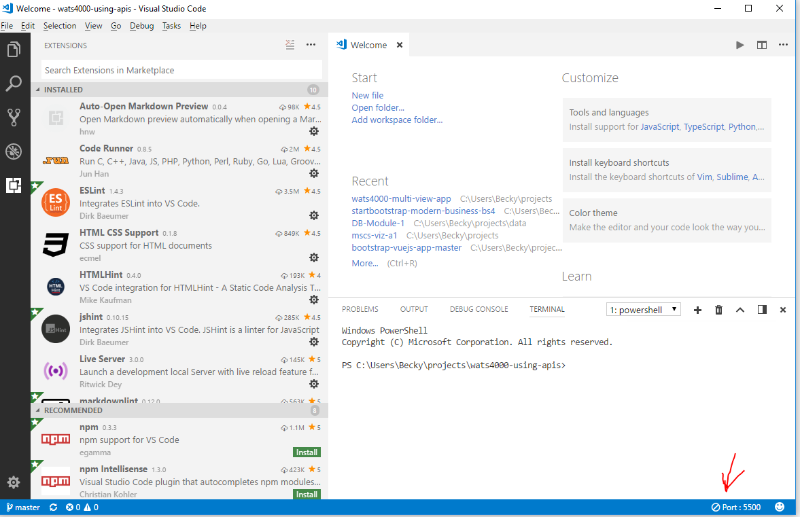
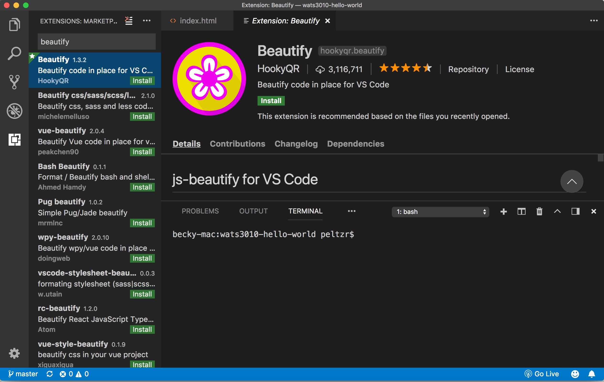
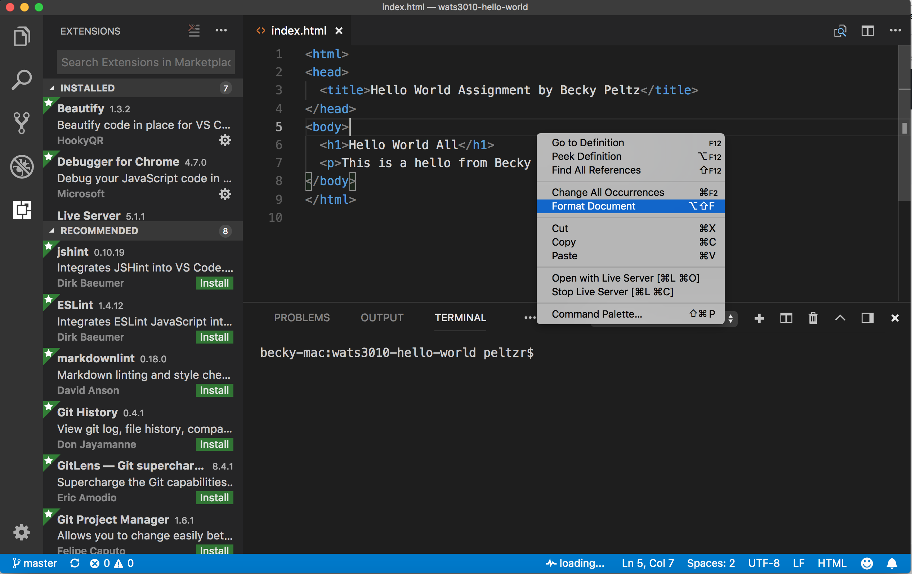

This is the answer to "How to set up Dev environment with Visual Studio Code?".
Install Visual Studio Code
Download and install VS Code using the link below.
https://code.visualstudio.com/
Plugins
Plugins provide additional functionality.
Live-Server plugin
Live-Server will serve up web pages from your VS Code project to your default browser. It runs an HTTP server as a background process on the 5500 port, which is a development port.
To install:
Click on the Extensions icon located at the bottom of the left nav bar in the VS Code Application.

Search for 'Live-Server' and click on the Green Install button.

After the Extension is loaded, click on the Blue Reload button to complete the installation.

Now you should see a Go Live button in the bottom status bar. When you click on that, Live-Server will start and serve your index.html file by default.
Once the server has been started, the Go Live button will change to Port: 5500 which indicates that the server is running. The Go Live and Port:5500 buttons operate as a toggle. When you save changes in files that are being served, the server will automatically reserve the files. This will ensure that your browser is always running the latest saved changes.

Beautify Plugin
The Beautify Plug in will help with code formatting. It will allow you to right-click on a document that you are editing and see a "Format Document" option. Clicking on this will format your page. As with all VS Code plugin installs, you go navigate to the plugin section, search for the plugin you want to install, press the Install button and then press the Reload button to make the plugin active.
The picture below shows the install button.

The picture below shows the Format Document option that you see when you right click in a document.

User Settings
VS Code allows you to customize settings for all projects (User Settings) or for a single project (Workspace settings). VS Code provides a GUI settings manager by default. To modify default settings by upgrading JSON configuration directly use the open command (CTRL-Shift-P on Windows or CMD-Shift-P on Mac) and type in "Open Settins (JSON)".

You will see 2 files side by side. On the left are the default settings and on the right are the User setting overrides.

To change a default setting find the setting on the left and then copy it to the right with your desired setting. For example, if you don't want to see the minimap on the right hand side of the application, you can make the following entry in the file on the right. Notice that options are key : value pairs and that they are commas separated.
{
"editor.minimap.enabled":false
}
If you are using Windows and want to use "Git Bash" in for the VS Code terminal add the following to your User Settings:
"terminal.integrated.shell.windows": "C:\\Program Files\\Git\\bin\\bash.exe"
How to Easily Add VS Code to the Mac PATH
It is often handy to be able to open VS Code from the command line. In order to do this the "code" command which is the name of the VS Code program must be in the machine's list of programs which are stored in the environmental PATH variable. It will get installed in the windows PATH during Windows install. For the Mac, you need to do this:
Open Visual Studio Code and press Command + Shift + P then type Shell in command palette now you are able to find this option like Shell Command : Install code in PATH from suggested list in command palette. Select that options.